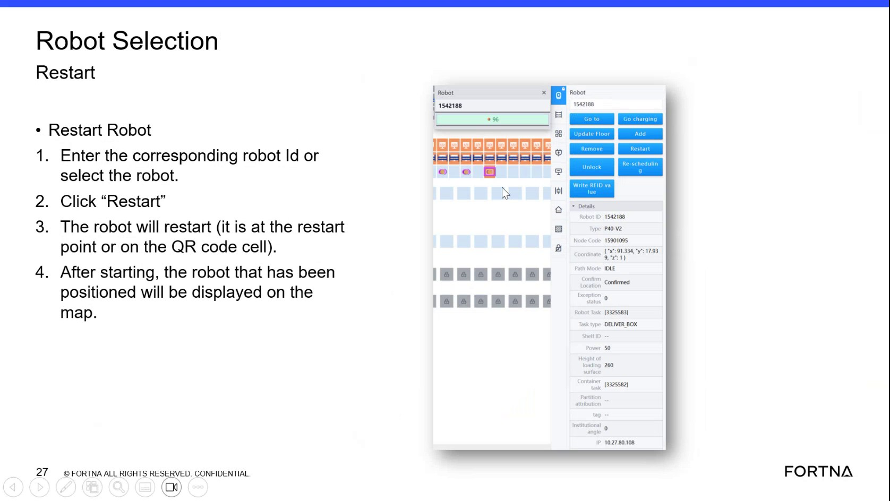

| Procedure ID | proc_select_a_container_location_to_view_tote_details_v1 |
|---|---|
| Title | Select A Container Location To View Tote Details |
| Procedure Type | operation |
| Primary Role | operator |
| Support Safe | Yes |
| Validation Status | needs_sme_review |
| Merge Status | source_finalized |
Use the Container Selection screen to select a location and view the associated box icon and tote number.
Use when viewing the Container Selection screen and you need to identify or confirm the tote associated with a selected location. The source states that selecting a location shows a box icon and the tote number.
Responsible role: operator
Instruction:
Open or view the Container Selection screen.
Expected result:
The Container Selection screen is visible and available for location selection.
Screens / Images:

Stop or Escalate If:
Responsible role: operator
Instruction:
Select the desired location on the Container Selection screen.
Expected result:
The system accepts the location selection.
Screens / Images:
Stop or Escalate If:
Responsible role: operator
Instruction:
Observe whether a box icon appears after the selection.
Expected result:
A box icon appears for the selected location.
Screens / Images:
Stop or Escalate If:
Responsible role: operator
Instruction:
Read the tote number shown for the selected location.
Expected result:
The tote number for the selected location is visible and can be read.
Screens / Images:
Stop or Escalate If:
Responsible role: operator
Instruction:
Use the displayed tote number and selected location information for identification or confirmation.
Expected result:
The operator has the selected location and tote number available for confirmation.
Screens / Images:
Stop or Escalate If: